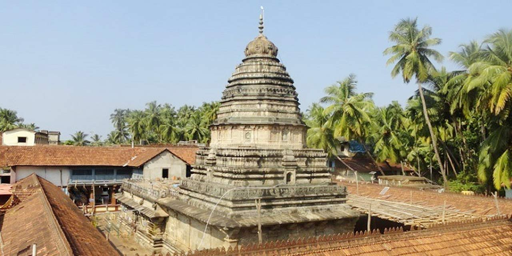
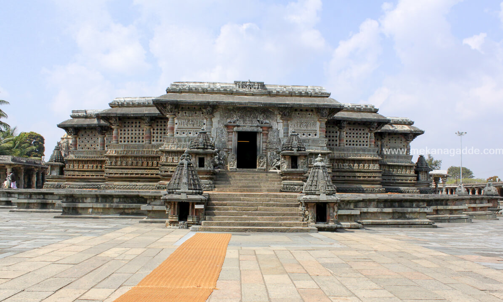

Temples and pilgrims in Karnataka
Virupaksha Temple, Hampi
The Virupaksha Temple in Hampi, Karnataka, is a 7th-century UNESCO World Heritage site dedicated to Lord Shiva (Virupaksha) and his consort Pampa. Located on the Tungabhadra River, it is the center of Hampi’s ruins, featuring a 50-meter-tall, 9-story eastern gopura (tower) and a self-manifested Shivalinga.
- Key Information
- Location: Hampi, Vijayanagara district, Karnataka (banks of Tungabhadra River).
- Best Time to Visit: October to March (cooler months).
- Timings: Open daily, typically from early morning (approx. 6 AM for Aarti) to late evening.
- Entry Fee: No entry fee for the temple, but camera fees may apply.
- Click here for more information.
- How to Reach
- By Air: Hubli Airport (approx. 150 km) is the nearest major airport.
- By Rail: Hospet Railway Station (13 km away) is the nearest station.
- By Road: Well-connected by local buses and taxis from Hospet.
Udupi Sri Krishna Temple
The Udupi Sri Krishna Temple is a historic 13th-century Hindu temple in Karnataka, founded by Saint Madhvacharya, dedicated to Lord Krishna in his childhood form (Balakrishna). Famous for its unique daily worship, the idol faces west and is viewed only through a nine-holed window, the Navagraha Kindi, and a small window known as Kanakana Kindi.
- Key Tourist Information
- Darshan Timings: 4:30 AM – 9:30 PM.
- Location: Car Street, Udupi, Karnataka, roughly 4 km from Udupi Railway Station and 60 km from Mangalore International Airport.
- Key Highlights: The idol is worshipped through the 9-holed Navagraha Kitiki. The Kanakana Kindi is a small window dedicated to the saint Kanakadasa.
- Seva Booking: Special pujas like Panchamrita Abhisheka and Tulabharam can be booked through the official Udupi Krishna Mutt website.
- Dress Code: Traditional attire is recommended for both men and women.
- Nearby Attractions: Malpe Beach (approx. 4 km), Ananteshwara Temple (adjacent).
- Click here for more information.
The Mahabaleshwar Temple in Gokarna

The Mahabaleshwar Temple in Gokarna, Karnataka, is a renowned 4th-century CE Hindu pilgrimage site dedicated to Lord Shiva, housing the sacred Atmalinga. Situated on the coast, it is known as Dakshin Kashi and is highly revered, attracting devotees seeking blessings. The town blends spiritual significance with popular, scenic, and relaxed beaches.
- Essential Information
- Location: Uttara Kannada district, Karnataka.
- Best Time to Visit: November to February offers the best climate.
- Getting There: Gokarna has its own railway station (Gokarna Road), and is about 3-4 hours from Goa airport.
- Duration: A 2–3 day trip is ideal to cover the main temple and beaches.
- Click here for more information.
Sringeri Sharada Peetham

Sringeri Sharada Peetham, located in Karnataka's Chikkamagaluru district on the Tunga River, is the first of four Advaita Vedanta monasteries established by Adi Shankaracharya in the 8th century. Dedicated to Goddess Sharadamba (deity of knowledge), it is a major pilgrimage center known for its serene environment, the golden idol of Sharadamba, and the architecturally magnificent Vidya Shankara temple.
- Key Tourist Information:
- Location: Chikmagalur district, Karnataka; ~320 km from Bengaluru, 110 km from Mangaluru.
- Main Attractions: Sharadamba Temple, Vidyashankara Temple (stone carvings), Tunga River (teeming with fish), and the nearby Kigga temple (Rishyasringa).
- Best Time to Visit: October to March.
- Dress Code: Modest Indian attire is required. Saree is recommended for women entering the inner sanctum of Sharadamba temple.
- Getting There: Accessible by road via Mangaluru (110 km) or Shimoga (90 km). Nearest railway stations are Shimoga and Udupi.
- Travel Tips: Limited ATMs available, so carry enough cash.
- Click here for more information.
The Chennakeshava Temple in Belur

The Chennakeshava Temple in Belur, Karnataka, is a 12th-century masterpiece of Hoysala architecture dedicated to Lord Vishnu, commissioned by King Vishnuvardhana in 1117 CE to mark his victory over the Cholas. Known for its intricate soapstone carvings and over 80 delicate Madanika sculptures, it is a UNESCO World Heritage site featuring stunning, detailed artistry.
- Key Tourist Information:
- Location: Belur, Hassan District, Karnataka, India.
- Highlights: Star-shaped platform (Jagati), detailed carvings of Hindu epics, and highly polished, pillar-supported interiors.
- Best Time to Visit: Early morning or late evening is recommended, especially in summer, as walking barefoot on the stone platform can be difficult.
- Best Way to See: Hiring a local guide is highly recommended to appreciate the historical and architectural nuances.
- Nearby Attraction: Often visited alongside the similar, larger Halebidu temple complex, located approximately 16 km away.
- Access: Open daily. It is a highly popular site, which can be crowded during weekends.
- Click here for more information.